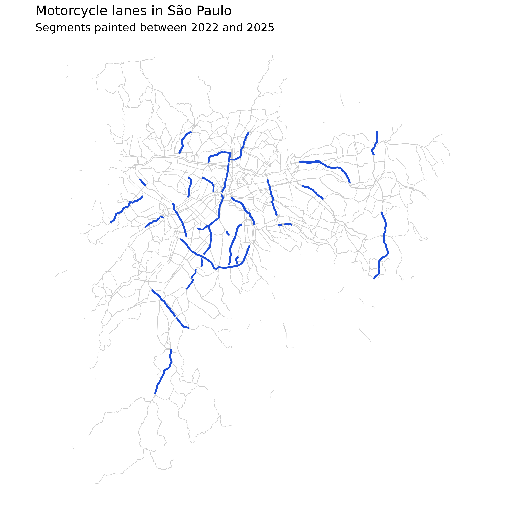
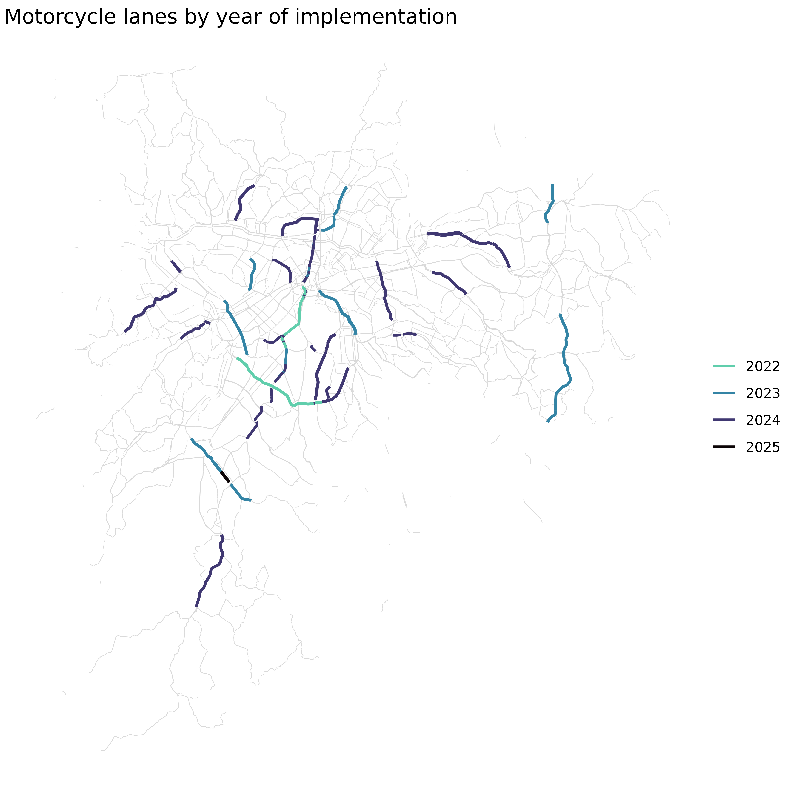

Mapping spatial datasets
Faixa Azul, São Paulo’s motorcycle lanes
Source:vignettes/articles/mapping-spatial-data.Rmd
mapping-spatial-data.RmdBetween 2022 and 2025, São Paulo painted faixas azuis, lanes
reserved for motorcyclists, along a set of arterial corridors. Insper
Cidades studied the programme and deposited three datasets: a spatial
layer, another spatial layer with crash counts, and a large plain table.
Between them they cover most of what this package does. The article
stops at describing the data. The findings belong to the study, and
open_project() at the end takes you there.
All three datasets belong to one project, so filtering
list_datasets() by project returns them together.
list_datasets(project = "faixa_azul")
#> # A tibble: 3 × 11
#> alias title description theme region project access is_spatial formats
#> <chr> <chr> <chr> <chr> <chr> <chr> <chr> <lgl> <chr>
#> 1 faixa_azul_sp Trec… Localizaçã… Mobi… São P… faixa_… downl… TRUE geojso…
#> 2 sinistros_sp Sini… Sinistros … Mobi… São P… faixa_… downl… FALSE parque…
#> 3 sinistros_vi… Sini… Localizaçã… Mobi… São P… faixa_… downl… TRUE geojso…
#> # ℹ 2 more variables: keywords <chr>, doi <chr>Download the lanes
list_resources() reports what an alias contains before
anything is downloaded. faixa_azul_sp holds one resource in
three formats.
list_resources("faixa_azul_sp")
#> # A tibble: 1 × 6
#> resource title is_spatial years formats default
#> <chr> <chr> <lgl> <chr> <chr> <lgl>
#> 1 dados Faixa Azul TRUE NA geojson, gpkg, parquet TRUEget_dataset() downloads it. Spatial resources come back
as sf objects, so the layer arrives ready to map.
lanes <- fetch(
"faixa_azul_sp",
fallback = function() st_read(ext_file("lanes.gpkg"), quiet = TRUE),
format = "gpkg"
)
#> ℹ Fetching file list for "10.60873/FK2/A4AC1I"
#> No encoding supplied: defaulting to UTF-8.
#>
#> Dataverse unreachable; using the bundled snapshot.
glimpse(st_drop_geometry(lanes))
#> Rows: 1,047
#> Columns: 16
#> $ id_osm <chr> "4328549", "4330744", "4331361", "4331371", …
#> $ logradouro <chr> "Avenida das Nações Unidas", "Avenida Washin…
#> $ logradouro_alt1 <chr> NA, NA, NA, NA, NA, NA, NA, NA, NA, NA, "Ave…
#> $ logradouro_alt2 <chr> NA, NA, NA, NA, NA, NA, NA, NA, NA, NA, NA, …
#> $ logradouro_alt3 <chr> NA, NA, NA, NA, NA, NA, NA, NA, NA, NA, NA, …
#> $ logradouro_ref <chr> "SP-015", NA, NA, NA, NA, NA, NA, NA, NA, NA…
#> $ tipo_via <chr> "trunk", "trunk", "trunk", "trunk", "trunk",…
#> $ faixas <chr> "3", "3", "3", "3", "3", "3", "4", "4", "4",…
#> $ limite_velocidade <chr> "60", "50", "60", "50", "60", "60", "50", "5…
#> $ limite_velocidade_pesados <chr> "50", NA, NA, NA, NA, NA, NA, NA, NA, NA, NA…
#> $ motocicleta <chr> NA, NA, NA, NA, NA, NA, NA, NA, NA, NA, NA, …
#> $ mao_unica <chr> "yes", "yes", "yes", "yes", "yes", "yes", "y…
#> $ superficie <chr> "asphalt", "asphalt", "asphalt", "asphalt", …
#> $ elevado <chr> NA, NA, NA, NA, NA, NA, "yes", NA, NA, NA, N…
#> $ comprimento <dbl> 645.74847, 58.75908, 448.52227, 161.48188, 4…
#> $ data_implementacao <date> 2023-11-01, 2024-04-01, 2023-10-01, 2024-04…Each row is one painted segment, with the street it sits on, the road
attributes around it, and data_implementacao, the month the
paint went down.
sinistros_via_sp covers the road segments the study
analysed. Its geometry makes a useful backdrop for the lanes.
roads <- fetch(
"sinistros_via_sp",
fallback = function() st_read(ext_file("roads.gpkg"), quiet = TRUE),
format = "gpkg"
)
#> ℹ Fetching file list for "10.60873/FK2/XA5PFG"
#> No encoding supplied: defaulting to UTF-8.
#>
#> Dataverse unreachable; using the bundled snapshot.Drawing one layer over the other shows where the lanes run.
ggplot() +
geom_sf(data = roads, colour = "grey80", linewidth = 0.25) +
geom_sf(data = lanes, colour = "#1D4ED8", linewidth = 0.8) +
labs(
title = "Motorcycle lanes in São Paulo",
subtitle = "Segments painted between 2022 and 2025"
) +
theme_void()
data_implementacao dates each segment, so the same layer
doubles as a timeline.
lanes <- lanes |>
mutate(year = format(data_implementacao, "%Y"))
lanes |>
st_drop_geometry() |>
as_tibble() |>
summarise(
segments = n(),
km = sum(comprimento, na.rm = TRUE) / 1000,
.by = year
) |>
arrange(year)
#> # A tibble: 4 × 3
#> year segments km
#> <chr> <int> <dbl>
#> 1 2022 102 21.3
#> 2 2023 363 71.2
#> 3 2024 571 120.
#> 4 2025 11 2.01
ggplot() +
geom_sf(data = roads, colour = "grey85", linewidth = 0.2) +
geom_sf(data = lanes, aes(colour = year), linewidth = 0.8) +
scale_colour_viridis_d(
option = "mako",
end = 0.8,
direction = -1,
name = NULL
) +
labs(title = "Motorcycle lanes by year of implementation") +
theme_void()
Read the attributes and the crash table
sinistros_via_sp is the same kind of object as the
lanes, with crash counts attached to each segment.
glimpse(st_drop_geometry(roads))
#> Rows: 5,068
#> Columns: 26
#> $ id_trecho_agregado <chr> "00002-000-000", "00004-000-000", "00007-000-000"…
#> $ trechos <dbl> 2, 2, 2, 4, 7, 3, 2, 3, 6, 4, 5, 5, 2, 2, 1, 1, 3…
#> $ comprimento <dbl> 393.9379, 243.9870, 236.2866, 426.4570, 404.5975,…
#> $ data_implementacao <date> NA, NA, NA, NA, NA, NA, NA, NA, NA, NA, NA, NA, …
#> $ faixas <dbl> 2.000000, 2.000000, 2.000000, 2.000000, 2.142857,…
#> $ limite_velocidade <dbl> 50, NA, 50, 50, 50, NA, NA, 40, NA, NA, 40, 40, 5…
#> $ amenidades <dbl> 2, 2, 2, 4, 7, 3, 3, 3, 6, 4, 5, 5, 2, 2, 1, 2, 8…
#> $ intersec <dbl> 14, 8, 8, 10, 16, 10, 9, 32, 13, 15, 6, 3, 11, 17…
#> $ tipo_via <chr> "trunk", "secondary", "secondary", "secondary", "…
#> $ radar_proximo <dbl> 1, 0, 0, 0, 0, 0, 0, 0, 0, 0, 0, 0, 0, 0, 0, 1, 1…
#> $ mao_unica <chr> "yes", "yes", "yes", "no", "no", "yes", "yes", NA…
#> $ superficie <chr> NA, "asphalt", "asphalt", "asphalt", "asphalt", "…
#> $ total_sinistros <int> 1, 0, 8, 9, 4, 1, 4, 10, 12, 47, 8, 0, 2, 2, 4, 6…
#> $ sinistros_fatal <int> 0, 0, 0, 0, 0, 0, 0, 0, 1, 1, 0, 0, 0, 0, 1, 0, 0…
#> $ atropelamento <int> 0, 0, 2, 1, 0, 0, 2, 4, 1, 7, 1, 0, 0, 1, 0, 0, 1…
#> $ colisao <int> 0, 0, 5, 4, 3, 0, 2, 5, 9, 36, 7, 0, 2, 1, 4, 6, …
#> $ choque <int> 0, 0, 1, 0, 0, 0, 0, 0, 0, 1, 0, 0, 0, 0, 0, 0, 0…
#> $ total_pedestres <int> 0, 0, 0, 0, 0, 0, 0, 0, 0, 0, 0, 0, 0, 0, 0, 0, 0…
#> $ total_bicicletas <dbl> 0, 0, 1, 0, 0, 0, 0, 0, 0, 0, 1, 0, 0, 0, 0, 0, 0…
#> $ total_motocicletas <dbl> 0, 0, 6, 6, 3, 0, 1, 6, 10, 43, 8, 0, 1, 2, 4, 6,…
#> $ total_automoveis <dbl> 0, 0, 6, 3, 4, 0, 5, 5, 7, 26, 6, 0, 2, 1, 2, 6, …
#> $ total_onibus <dbl> 0, 0, 0, 0, 0, 0, 0, 1, 2, 7, 0, 0, 0, 0, 1, 0, 1…
#> $ total_caminhoes <dbl> 0, 0, 0, 0, 0, 0, 0, 1, 0, 5, 0, 0, 0, 0, 0, 0, 0…
#> $ total_vitimas_fatais <dbl> 0, 0, 0, 0, 0, 0, 0, 0, 1, 0, 0, 0, 0, 0, 1, 0, 0…
#> $ total_vitimas_graves <dbl> 0, 0, 0, 0, 0, 0, 0, 0, 1, 3, 1, 0, 0, 0, 0, 1, 0…
#> $ total_vitimas_leves <dbl> 0, 0, 8, 6, 6, 0, 3, 6, 10, 48, 7, 0, 2, 2, 3, 5,…sinistros_sp is the plain table behind those counts,
with one row per crash.
crashes <- fetch("sinistros_sp", fallback = function() readRDS(ext_file("crashes.rds")))
#> ℹ Fetching file list for "10.60873/FK2/IRGJPX"
#> No encoding supplied: defaulting to UTF-8.
#>
#> Dataverse unreachable; using the bundled snapshot.
glimpse(crashes)
#> Rows: 153,404
#> Columns: 22
#> $ id_infosiga <int> 2464210, 2464234, 2466426, 1768156, 2477534,…
#> $ data <date> 2022-01-01, 2022-01-01, 2022-01-01, 2022-01…
#> $ ano <int> 2022, 2022, 2022, 2022, 2022, 2022, 2022, 20…
#> $ hora <dbl> 5, 7, 9, 19, 6, 3, 5, 5, 6, 6, 6, 6, 7, 7, 7…
#> $ logradouro <chr> "RUA LETICIA", "AVENIDA DEPUTADO CANTIDIO SA…
#> $ numero <chr> "272.0", "7037.0", "1185.0", "833.0", "129.0…
#> $ latitude <dbl> -23.69099, -23.43516, -23.42626, -23.76001, …
#> $ longitude <dbl> -46.78973, -46.71733, -46.71430, -46.68426, …
#> $ tipo <chr> "SINISTRO FATAL", "SINISTRO FATAL", "SINISTR…
#> $ tipo_acidente <chr> "COLISAO", "CHOQUE", "OUTROS", "NAO DISPONIV…
#> $ tp_veiculo_bicicleta <int> NA, NA, NA, NA, NA, NA, NA, NA, NA, NA, NA, …
#> $ tp_veiculo_caminhao <int> NA, NA, NA, NA, NA, NA, NA, NA, NA, NA, NA, …
#> $ tp_veiculo_motocicleta <int> 1, NA, 1, NA, NA, NA, NA, NA, NA, NA, NA, NA…
#> $ tp_veiculo_onibus <int> NA, NA, NA, NA, NA, NA, NA, NA, NA, NA, NA, …
#> $ tp_veiculo_outros <int> NA, NA, NA, NA, NA, NA, NA, NA, NA, NA, NA, …
#> $ tp_veiculo_nao_disponivel <int> NA, 1, NA, NA, 1, NA, 1, NA, NA, NA, NA, 1, …
#> $ tp_veiculo_automovel <int> 1, NA, NA, NA, NA, NA, NA, 1, NA, NA, 2, NA,…
#> $ gravidade_nao_disponivel <int> NA, 1, NA, NA, NA, 2, NA, NA, NA, NA, 2, 1, …
#> $ gravidade_ileso <lgl> NA, NA, NA, NA, NA, NA, NA, NA, NA, NA, NA, …
#> $ gravidade_leve <int> NA, NA, NA, NA, NA, NA, NA, 2, NA, NA, 1, NA…
#> $ gravidade_grave <int> NA, NA, NA, NA, NA, NA, NA, NA, NA, NA, NA, …
#> $ gravidade_fatal <int> 1, 1, 1, NA, 1, NA, NA, NA, NA, NA, NA, NA, …The last year is partial, so check coverage before comparing years.
crashes |>
summarise(
crashes = n(),
first = min(data, na.rm = TRUE),
last = max(data, na.rm = TRUE),
.by = ano
) |>
arrange(ano)
#> # A tibble: 4 × 4
#> ano crashes first last
#> <int> <int> <date> <date>
#> 1 2022 43988 2022-01-01 2022-12-31
#> 2 2023 46527 2023-01-01 2023-12-31
#> 3 2024 45832 2024-01-01 2024-12-31
#> 4 2025 17057 2025-01-01 2025-05-31Documentation, citation, and source code
docs = TRUE returns the data alongside the deposit’s
documentation. When a deposit ships a documentation workbook the package
reads it; otherwise the docs element carries the Dataverse
metadata.
deposit <- fetch("faixa_azul_sp", docs = TRUE, fallback = function() {
list(data = lanes, docs = readRDS(ext_file("docs.rds")))
})
#> ℹ Fetching file list for "10.60873/FK2/A4AC1I"
#> No encoding supplied: defaulting to UTF-8.
#>
#> Dataverse unreachable; using the bundled snapshot.
str(deposit$docs)
#> List of 6
#> $ title : chr "Faixa Azul, São Paulo [2022-2025]"
#> $ description: chr "Base georreferenciada de vias com faixas de trânsito dedicadas a motociclistas, i.e., vias com faixa azul, impl"| __truncated__
#> $ authors : chr "Costa, Adriano Borges Ferreira da; Dutra, Adriano; Theil, Gustavo; Mugnol, Júlio"
#> $ doi : chr "10.60873/FK2/A4AC1I"
#> $ url : chr "https://doi.org/10.60873/FK2/A4AC1I"
#> $ year : chr "2025"cite_dataset() pulls the citation from Dataverse in
plain text, BibTeX, or RIS.
citation <- tryCatch(
cite_dataset("faixa_azul_sp"),
error = function(e) {
cli::cli_inform("Dataverse unreachable; using the bundled snapshot.")
readr::read_lines(ext_file("citation.txt"))
}
)
#> ℹ Fetching metadata for "10.60873/FK2/A4AC1I"
#> No encoding supplied: defaulting to UTF-8.
#>
#> Dataverse unreachable; using the bundled snapshot.
citation
#> [1] "Costa, Adriano Borges Ferreira da; Dutra, Adriano; Theil, Gustavo; Mugnol, Júlio (2025). Faixa Azul, São Paulo [2022-2025]. Insper Dataverse. https://doi.org/10.60873/FK2/A4AC1I"open_project() prints the study behind the datasets and
opens its pipeline repository, where the cleaning, aggregation, and
analysis steps live.
open_project("faixa_azul", open = FALSE)
#>
#> ── Faixa Azul e sinistros de trânsito ──────────────────────────────────────────
#> Project: "faixa_azul"
#> Datasets: "faixa_azul_sp", "sinistros_sp", and "sinistros_via_sp"
#> Repository: <https://github.com/inspercidades/faixa-azul>The full package reference is at https://inspercidades.github.io/inspercidados.